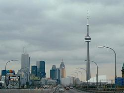
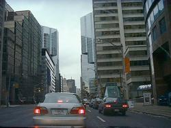
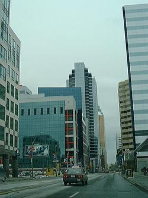
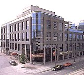

|
Прошу прощения за затишье. У меня тут были напряженные дни,
не считая половины воскресенья, когда мы наконец добрались до
даун-тауна и взобрались на CN Tower.

Но это я только так говорю
"взобрались" :) На самом деле туда ходят лифты. Ведь это самое
высокое строение на Земле (553.33м). На втором месте Останкино -
всего на 13 м ниже :) Башню эту видно со всех точек города, если
только ее не заслоняют туман или рядом стоящие здания (комментарий
от Андрея: и как это ее, родимую, можно заслонить, если в ней 550 метров?! :)))
В башне
размещается дофига ресторанов (Андрей: хмм... дофигаааа... целых два штуки :))),
посетить которые нам не удалось
по той простой причине, что принимают там, наверху, только
кредитные (у нас - дебетные) карточки или нал. Но ни того, ни
другого у нас не было :) (Андрей: это вообще какой-то цирк! мы
отвыкли ходить с наличными деньгами в кармане - все только по
карточке. Но есть дурацкие места - типа этой башни - где нашу
карточку не принимают - нужна только кредитка, которой у нас
пока нет.) Поэтому нам не удалось пообедать в полкилометре над землей :) На
самом деле я вру: мы были только на высоте 346м, ибо добраться
до Sky Pod (верхней точки) у нас уже не хватило налички. И все
равно: вид был офигительный! Такое впечатление, что перед тобой
весь Торонто! Даун-таун уж точно весь, остальное надо созерцать
в бинокль (бинокли там тоже стоЯт - 1$ за пользование)
(Андрей: полная фигня эти бинокли! :)
 Громадные небоскребы с этой вышки смотрятся не такими уж и
большими, зато жутко красивыми, особенно зеркальные банки,
которых здесь пруд пруди (Андрей: на самом деле банков здесь
всего пять - не, в натуре! - всего пять банков на всю страну!
Но зато кррррррууууутыееееее... У каждого банка в даунтауне по
несколько небоскребов собственных - я так и не понял - зачем,
например, нашему РоялБанку четыре 150-ти этажных небоскреба?! :).
И много-много стоянок с машинками. А с
другой стороны CN Tower раздольно раскинулось озеро Онтарио. Я
даже и не предполагала, что оно настолько рядом. Большущее-
пребольшущее озеро. Местами даже не видно берегов. Надо будет
как-нибудь (как будет потеплее и посвободнее) выбраться прямо к
нему. А еще на башне есть стеклянный пол (Glass Floor). Я,
правда, по рассказам очевидцев, представляла сей пол несколько
другим: большей площади и полностью стеклянным, - хотя понимаю,
что по законам физики вряд ли это было бы безопасно :) А пол
оказался вовсе не большим и сделанным по типу окон - как будто с
рамами. И стоять на нем не страшно. Посему он меня не сильно
воодушевил :) Хотя и прикольно. Какие-то индийцы, к примеру, на
сем полу сидели. И я подумала, что, наверное, для достижения
наиболее острых ощущений надо было бы на этот пол лечь. - Тогда
наверное бы казалось, что паришь над землей. Но... хорошая мысля
приходит опосля, то бишь когда мы уже спустились с CN Tower-а.
Громадные небоскребы с этой вышки смотрятся не такими уж и
большими, зато жутко красивыми, особенно зеркальные банки,
которых здесь пруд пруди (Андрей: на самом деле банков здесь
всего пять - не, в натуре! - всего пять банков на всю страну!
Но зато кррррррууууутыееееее... У каждого банка в даунтауне по
несколько небоскребов собственных - я так и не понял - зачем,
например, нашему РоялБанку четыре 150-ти этажных небоскреба?! :).
И много-много стоянок с машинками. А с
другой стороны CN Tower раздольно раскинулось озеро Онтарио. Я
даже и не предполагала, что оно настолько рядом. Большущее-
пребольшущее озеро. Местами даже не видно берегов. Надо будет
как-нибудь (как будет потеплее и посвободнее) выбраться прямо к
нему. А еще на башне есть стеклянный пол (Glass Floor). Я,
правда, по рассказам очевидцев, представляла сей пол несколько
другим: большей площади и полностью стеклянным, - хотя понимаю,
что по законам физики вряд ли это было бы безопасно :) А пол
оказался вовсе не большим и сделанным по типу окон - как будто с
рамами. И стоять на нем не страшно. Посему он меня не сильно
воодушевил :) Хотя и прикольно. Какие-то индийцы, к примеру, на
сем полу сидели. И я подумала, что, наверное, для достижения
наиболее острых ощущений надо было бы на этот пол лечь. - Тогда
наверное бы казалось, что паришь над землей. Но... хорошая мысля
приходит опосля, то бишь когда мы уже спустились с CN Tower-а.
Да, я еще не рассказала о так называемой прелюдии к посещению
вышки. Подходим мы, значит, к вышке и смотрим, неподалеку стоит
толпа - очередь в рядом стоящее большое и круглое здание, на
котором почему-то висит сбивающий с толку людей указатель на CN
Tower. Это очередь за билетами, - подумали мы. Правда, наполняли
эту очередь, что сразу бросилось в глаза, одни китайцы :) Встали
и мы. И несмотря на то, что смутные сомнения нас все же терзали
относительно цели нашего пребывания в оном месте, успокаивало
то, что иной раз в очереди наблюдались и лица других
национальностей. Потом одна добрая китаянка подарила нам купон,
который впоследствии нам "скостил" 8 баксов. От купона исходило
душевное поздравление с Новым годом (Андрей: китайским новым
годом - кстати, у меня на работе сегодня половина китайцев
отсутствовала - праздник праздновали - здесь к национальным
праздникам очень трепетно относятся. Я вот думаю - не заявить-ли
мне, что у меня 1-е апреля - какой-нть религиозный праздник
Святой Альма-Матеры :)- поверят ведь! :))) и приглашение куда-то :)
Это, оказывается, 14 февраля у китайцев новый год. Я обратилась
к Андрюше с предложением сменить место дислокации. Ведь не может
же быть у китайцев традиции каждый новый год лазать на вышку.
Однако никаких других очередей поблизости Андрюшин зоркий глаз
не заметил, и до входа мы продвигались уже относительно
смирившись с ситуацией :) Ведь не зря же столько стояли!
Оказалось, что зря :) Вход был именно в то круглое сооружение
наподобие цирка, и никуда больше (Андрей: нихрена-себе цирк :-О
Это чудо - дом в смысле - назывался SkyDome, и был размером с
большой круглый стадион. Меня по большому счету именно его
название и сбило с панталыку :). Китайцы, конечно, выглядели
удовлетворенными (другого они и не ждали), чего нельзя было
сказать о нас. Сначала мы решили получать от жизни кайф. Ну не
туда попали, ну и что? Будем стараться развлекаться здесь.
Внутри помещение действительно похоже на цирк. Круглый хол, в
котором располагаются стенды (видно, с какими-то достижениями
китайцев в Торонто), мини-кафушки и всякая дребедень для
продажи. Когда входишь внутрь, там огромная арена, окруженная
как бы секторами с сидениями (позже мы узнали, что все это
строение представляет собой, оказывается, стадион. :) А SkyDome он называется
потому, что летом крыша с него куда-то убирается, и стадион остается прямо под
открытым небом.) На арене то
же самое, что и в холе: опять продажа (вплоть до мебели), опять
еда (о боже, как от нее несло! :) и мини-комплексы для детских
игрищ. Да, - сказал Андрюша, - странные понятия у китайцев о
празднике. Меня тоже все это ни разу не возбудило, и мы стали
меееедленно (потому что толпа), но верно (потому что задолбало)
продвигаться к выходу,
дабы найти, наконец-то, вход в CN Tower :)
(Андрей: вход в тауэр мы тут-же около выхода из этого стадиона
нашли, и тут-же нас обидели, заставив вытрясти всю последнюю
наличку из карманов - включая почти все монетки :) Мы потом
как только вышли из этого тавера, так к первому-же банкомату
в ближайшем небоскребе :))) кинулись :)))

А после созерцания Торонто с CN Tower мы пошли гулять по даун-
тауну. Да!!! Впечатление, конечно, еще то. И теперь я
окончательно осознала, что я - в западном полушарии.
Это действительно тот Торонто, который я видела на фотографиях в
интернете.

Все эти зеркальные, интересной архитектуры,
сооружения! Весь этот глобализм! Встречаются также здания, сделанные под старину.
У них вообще навороченная архитектура, -
смотрятся, как замки! И все это дело вперемежку. Я сколько
ходила, столько и вертела бошкой, - чуть ли не вокруг своей оси.
А шли мы быстро, ибо начинало темнеть и, тем самым, мешало
ориентации на местности :) Особенно моей.
Эх, вот если бы не
китайский новый год, времени на прогулку было бы куда больше! :)
........
Ха! "Ночка пролетела, все осталось позади..." Я хочу сказать, что уже утро. Села
я дописывать письмо и обнаружила, что Андрюша тут навставлял каких-то
суперважных, на его взгляд, комментариев. Хорошо еще, что у нас в квартире нет
никаких животных и никто не линяет, а то вышло бы, как в Простоквашино :)
Так вот. Почему, собственно, у меня были напряженные дни... Да просто потому, что
я готовилась к ярмарке труда (job fair), которая проходила 15-16 февраля. Здесь
такие
ярмарки проходят ежемесячно. Прежде всего, я долго и упорно штудировала науку
написания резюме. Это действительно наука. И на подобную тему (в том числе, и о
поведении на интервью) написано много книг. Изучив книги, я приступила к
сочинению резюме. Но тут, откуда ни возьмись, появился Андрюша и сказал, что я
пишу полную туфту, ибо по части программерского резюме имеются некие особенности,
не отраженные в книгах. Ему-то хорошо говорить, его работа уже ждала здесь, и они
с Темой придумали Андрюше резюме за один вечер (по образу и подобию Теминого
резюме). Мне же ничего не оставалось делать, как сотворить резюме по образу и
подобию Андрюшиного :) 15 февраля резюме уже было готово, и остаток дня, а также
ночь, ушли на моральную подготовку :) Вечером, накануне моего похода на ярмарку,
звонила жена Кости Тесленко - Света, и посоветовала мне для храбрости хряпнуть :)
Дескать, не так сильно буду трястись. Что ж... Настало утро. Я хваталась то за
одно, то за другое, то за прическу, то за маникюр, то за резюме, то за лингво
(поднабраться напоследок нужных слов (как будто можно надышаться перед смертью :)).
Сердце мое просто заходилось. Прям вот крашусь и чувствую, что не могу вдохнуть.
Мандраж, однозначно. Хряпнула я
мартини (водки-то не было :), но вскоре поняла, что _столько_ я не выпью, и
оставила эту затею :)

Приехала я, значит, в даун-таун, вылезла на нужной станции метро и, как обычно,
поперлась не в ту сторону, всех подряд спрашивая,
где располагается
Radisson Plaza Hotel (место проведения ярмарки труда). Как ни странно, но оказалось, что далеко не
все были осведомлены о месторасположении отеля. И пока я его нашла, прошло минут
30. Захожу в отель, смотрю, народ набивается в лифты. Я тоже набилась. Смотрю,
часть народу вышла на 3-м этаже. Я тоже вышла. Смотрю, часть народу стоит в
очереди в какую-то комнатку. Я тоже встала :) Пока стояла, поняла, что это
рекрутерская фирма. Зашла и говорю, что ищу работу такую-то и такую-то. Дядичка
взял у меня резюме, сказал, что примет к сведению, выдал мне визитку и пожал на
прощание руку (здесь все друг другу всегда жмут руки, и мужчины, и женщины).
Потом иду по коридору и вижу, что таких комнаток дофига, а толпа - еще больше.
Как-то растерялась я... Тут встретила Костю Тесленко, он в последнее время решил
подыскать себе контрактную работу (это приносит очень большие деньги). Он
спросил, зарегистрировалась ли я. И после моего недоуменного вертения головой
отвел меня туда, где регистрируют. Там я стояла в оооочень большой очереди,
которая, однако, вследствие четкой организации весьма быстро продвигалась. Там я
показала свое резюме, мои параметры вписали в регистрационную книгу, спросили,
какого рода я ищу работу, наклеили на грудь бумажку, на которой были написаны мои
имя, фамилия и название желаемой работы (web-developer), а после этого выдали
список
присутствующих на ярмарке фирм с их требованиями и регистрационную форму, которую
я потом долго и упорно заполняла. Оставив форму в специальной корзине, я опять
направилась в
коридоры. Там я опять встретила Костю. Видя мое душевное волнение, он сам
подталкивал меня к работодателям. И если я делала круглые и полные ужаса глаза,
то сам спрашивал их, не нужны ли им услуги web-дизайнерства и девелоперства. А
ежели они начинали проявлять к нему явный интерес, он радостно указывал на меня,
говоря, что это не он, это я тот самый девелопер, который им так нужен :) Потом я
взяла инициативу в свои руки и стала подходить сама. Костя тем временем в
сторонке заполнял свою регистрационную форму и краем глаза следил, нет ли у меня
проблем. Потом он мне сказал, дескать, че ты так говоришь: я ищу работу...
Понятно, дескать, что ты не веселиться сюда пришла :) Ты, говорит, подходи и
говори: здрасьте, я web-developer. Чуть позже, когда мой страх подисчез, и я вошла
наконец в струю, я так и стала делать. Подхожу, выпячиваю грудь колесом, радужно
улыбаюсь и этак гордо говорю:
Hi! I am a web-developer. :) При этом сотрудники фирм несказанно радовались (они
там
всем радуются, кто более менее подходит по требованиям), брали мое резюме и в
ответ давали визитки, буклеты с информацией о фирме, ручки, линейки, не забывая,
как обычно, о сияющей улыбке и о рукопожатии.
Но как и водится, только я разогналась и дошла до другого этажа, как ярмарка
закрылась на ланч, аж на 2 часа. Костя угостил меня капучиной, почитал мое
резюме, дал нужные указания и доброжелательные советы и поехал на работу (надо
сказать, большое ему спасибо за поддержку :). А я,
побродив оставшийся час по близ стоящему молу, вновь отправилась на ярмарку. Надо
сказать, что мне даже удалось пройти интервью. Но, похоже, меня туда не возьмут,
ибо им требуются нормальные English-skills-ы. А у меня с этим делом, особенно с
пониманием, пока напряжно. Многие там выражали явное удивление и восхищение, что
я в Канаде всего лишь две недели. Видимо, в глубине души они считают, что первым
делом надо на курсы английские походить, разговориться, а потом уж и работу
искать. На самом деле, так почти все и делают. И Костя с Темой тоже так делали.
Но у нас с Андрюшей время не ждет. Нужно отдавать долг ЦФТ. Хотя, поскольку
Андрюша уже при деле, я могу не сильно волноваться и искать работу более
размеренно. Я, конечно, понимаю, что вероятность моего скорого трудоустройства
стремится к нулю. Но все равно, я очень рада, что посетила эту выставку. По крайней
мере, я теперь знаю, как это делается, знаю, как проходят интервью, знаю, что они
все не злые, а даже наоборот, искренне боагодарят, что я снизошла до них... И я в
некотором роде получила душевное успокоение. Теперь вот буду рассылать свои резюме
по интернету и параллельно готовиться: подымать уровень английского и
программерские skills-ы.
Вот такие пироги.
На медицинскую страховку мы еще не эплаились. Все равно раньше, чем 29 апреля нам
ее не видать (медицинская страховка выдается через 3 месяца после приземления).
Так что юзаем (вернее, юзаю :) пока лекарства, которые мы с собою привезли. Вообще,
что касается медицины, Наташа Ершова говорит, что здешние врачеватели почти ни в чем
не видят проблемы. Например, они не видят проблемы в астме. Они считают, что садиться
на гормоны и
колоться - это уже крайний случай. Все лечится какими-то особыми препаратами.
Проходишь курс лечения, и становится значительно лучше. Людям, страдающим гайморитом,
здесь
нос не протыкают, выкачивая все ненужное. Наташа говорит, что когда
она сообщила здешним докторам о той экзекуции, которую проделывают с несчастными в
России, они, в смысле врачи, чуть в обморок не попадали. Здесь гайморит тоже лечится
с помощью
препаратов. И, говорят, помогает.
Я относительно скоро тоже пойду по врачам. Андрюша работает в такой фирме, которая
полностью оплачивает медицинское обслуживание для всей семьи и почти полностью
лекарства. Вот такая крутая фирма! :) И тоже буду что-то делать со своими болячками.
Наташка рассказывала еще прикол про какого-то дядичку, который в России на одно ухо
не слышал, перепонка что ли у него с дыркой была. И ему там, в России, говорили,
что это неизлечимо. Здесь же очень удивились такому утверждению и без всяких
проблем чем-то заклеили ему эту дырку. Дядичка до сих пор сам не свой ходит. Надо
же, - говорит, - столько лет мучился :)
Что и говорить. Наташка день и ночь готовится к экзамену медицинскому, изучая
требуемую литературу, и сама поражается. Я, говорит, так многого не знала, как
лечила людей, просто странно. Им в институте многого не преподавали. Однако,
российским врачам-эмигрантам здесь плохо с трудоустройством по большей части не потому,
что они здесь не котируются, а потому, что здесь якобы слишком много врачей. Поэтому
всех кандидатов на врачебные посты во всей Америке просеивают через множество трудных
и дорогостоящих
экзаменов. :(
Что ж... Утешает то, что я не врач :).
Счастливо!
Следующее письмо- Письмо 4
|
{kind=link}
{kind=link}
{kind=link}